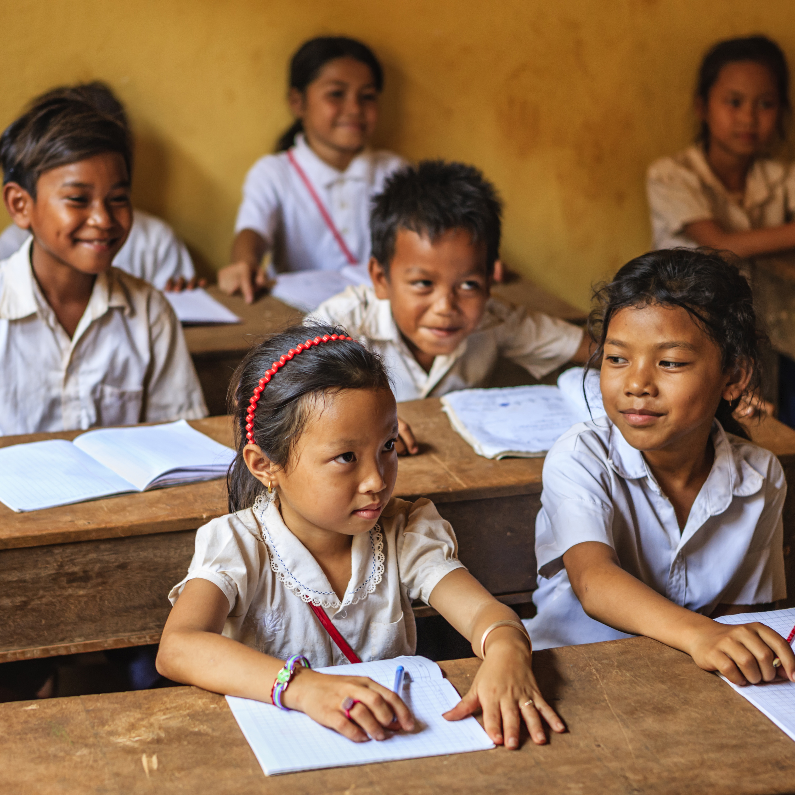

Educación
La educación sobre la diversidad de géneros, la importancia de erradicar estereotipos y prejuicios, así como el reconocimiento de los derechos individuales y colectivos,
son temas que promueven la construcción de sociedades más tolerantes y respetuosas.
La integración de perspectivas diversas en todos los ámbitos contribuye a enriquecer la experiencia humana y fortalecer los lazos sociales.

Cosas a tener encuenta sobre la diversidad
En muchos países se encarcela a personas lesbianas, gays, bisexuales, transgénero e intersexuales en aplicación de leyes
que penalizan su orientación sexual o su identidad de género y convierten un beso en un delito.
Se les tortura para obtener confesiones de "desviación" y se les viola para "curarlos"
de ella sin respetar la diversidad sexual y de género.